About me
I am a PhD student in the Computer Graphics group at the University of Tübingen, advised by Prof. Hendrik Lensch, and a scholar of the International Max Planck Research School for Intelligent Systems (IMPRS-IS).
My research is on robust video object tracking and segmentation with foundation models. I am particularly interested in tracking through occlusions, where objects disappear, reappear and get confused with look-alikes, and in self-correcting tracking systems that detect their own failures and recover from them. Beyond tracking, I work on self-supervised learning, histopathology image analysis and surgical video analysis.
Before Tübingen, I completed a dual degree at the Indian Institute of Technology Bombay: a B.Tech in Energy Engineering with an M.Tech in Artificial Intelligence and Data Science, and a minor in Computer Science. There I worked with Prof. Biplab Banerjee on few-shot hyperspectral image classification and domain generalization, and with Prof. Aditya Grover (UCLA) on vision-and-language navigation.
Research interests
- Video object tracking and segmentation
- Self-supervised learning
- Histopathology image analysis
- Surgical video analysis
News
- 2026.09
When Trackers Fail, our VLM-guided verification and recovery framework for video object segmentation, is accepted at NeurIPS 2026.
- 2026.09
Learning Where to Focus (self-supervised multi-scale ViTs for histopathology) is accepted at GCPR 2026.
- 2026
ReMeDI, refined memory for SAM 3 in surgical segmentation, is accepted at MICCAI 2026.
- 2025.11
Presented our self-supervised learning benchmark for medical imaging at BMVC 2025.
- 2025.05
HistDiST is accepted at GCPR 2025, and SurgTracker at the CVPR 2025 SynData4CV workshop.
Publications
* equal contribution. Full list on Google Scholar.
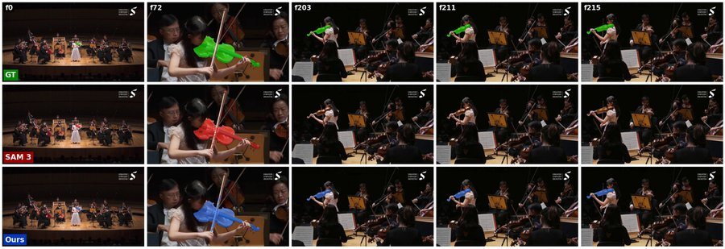
When Trackers Fail: VLM-Guided Verification and Recovery for Robust Video Object Segmentation
A failure-aware tracking loop around SAM 3: a vision-language verification agent checks whether the propagated mask still follows the target, and a correction agent re-prompts the tracker only when it does not. Improves SAM 3 by 1.2 and 2.7 J&F on LVOS-v2 and SeCVOS.
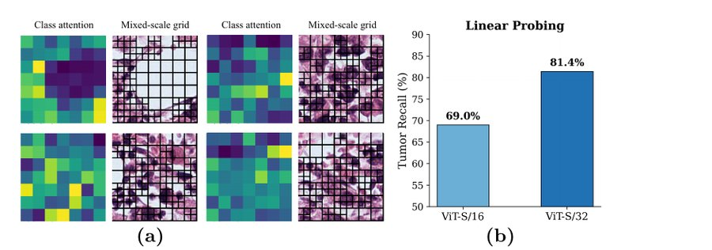
Learning Where to Focus: Self-Supervised Multi-Scale ViTs for Histopathology
Self-supervised multi-scale tokenization for whole-slide images: class attention decides which regions deserve fine tokens while the rest stay coarse, so capacity goes where the diagnostic signal is.
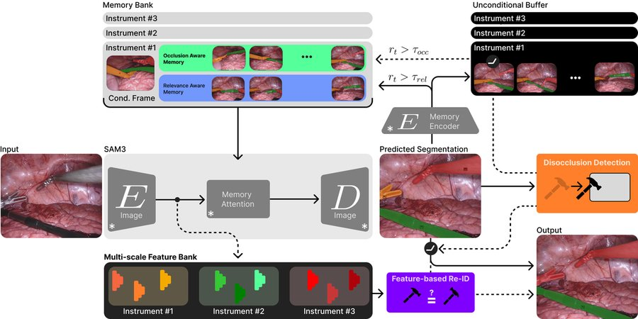
ReMeDI: Refined Memory for Disambiguation of Identities with SAM3 in Surgical Segmentation
Keeps instrument identities apart in surgical video with a refined SAM 3 memory: occlusion- and relevance-aware memory banks, disocclusion detection and feature-based re-identification, all without retraining the tracker.
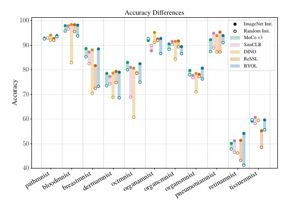
Evaluating Self-Supervised Learning in Medical Imaging: A Benchmark for Robustness, Generalizability, and Multi-Domain Impact
A systematic study of self-supervised pretraining on medical image classification: in-domain accuracy, robustness to distribution shift and multi-domain transfer across methods, backbones and initializations.
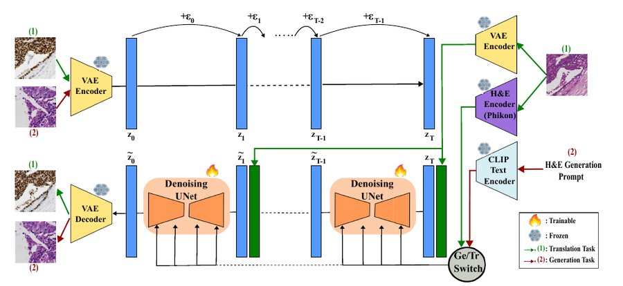
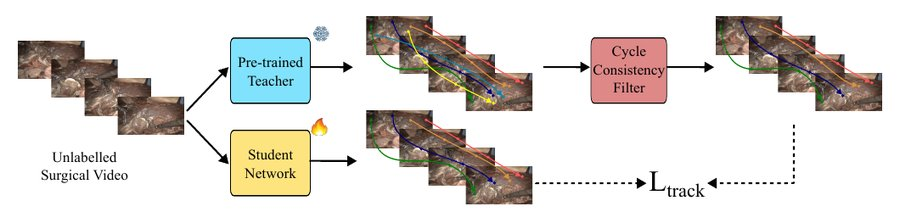
You Are Your Best Teacher: Semi-Supervised Surgical Point Tracking with Cycle-Consistent Self-Distillation
Adapts a synthetic-trained point tracker to surgical video with a frozen teacher, cycle-consistency filtering of its pseudo-labels and student fine-tuning, using only 80 unlabeled videos.
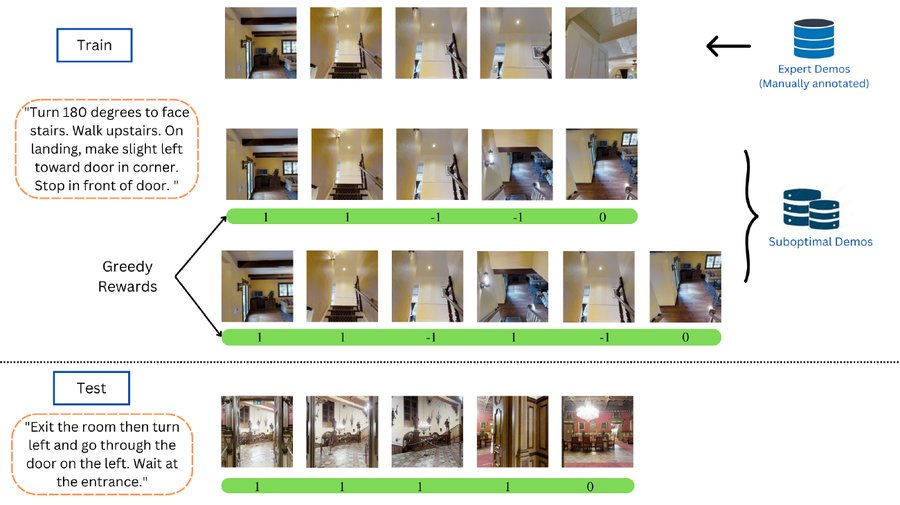
Scaling Vision-and-Language Navigation With Offline RL
Learning vision-and-language navigation policies from offline, suboptimal trajectory data with offline reinforcement learning.
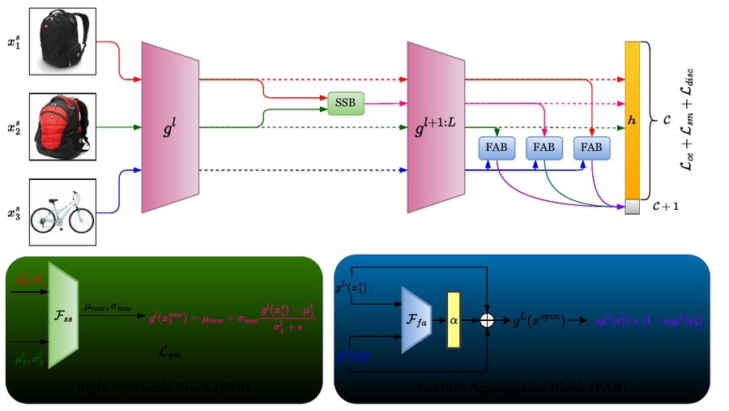
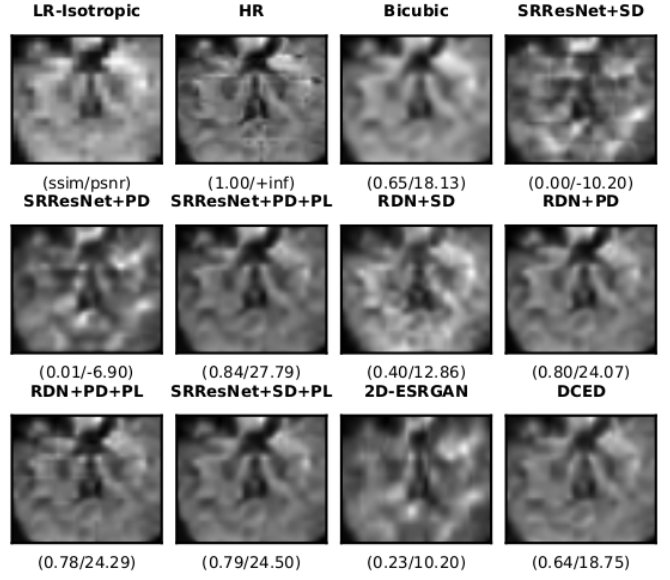
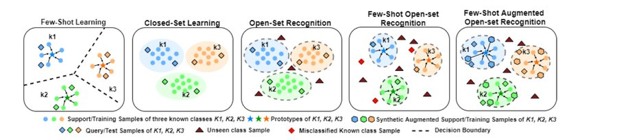
Few-Shot Open-Set Recognition of Hyperspectral Images with Outlier Calibration Network
Recognizing new hyperspectral classes from a few examples while rejecting unknown ones, with a calibrated outlier branch.
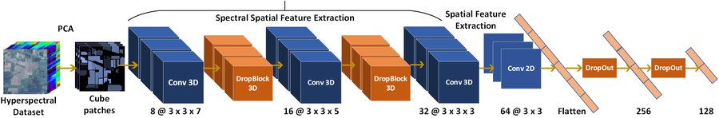
Service and teaching
Reviewer for NeurIPS, CVPR, ECCV, WACV, BMVC, MICCAI, TMLR and Pattern Recognition.
Teaching at the University of Tübingen: lecturer for the practical course Machine Learning in Graphics, Vision and Language; teaching assistant for Computer Graphics (2024/25) and for the practical course on Vision and NLP (2024). At IIT Bombay: head teaching assistant for Machine Learning for Remote Sensing II (2021, 2022).